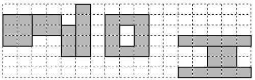
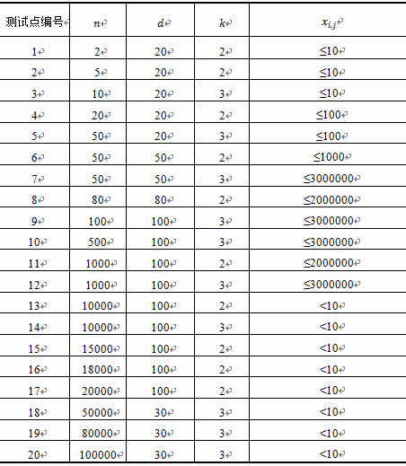
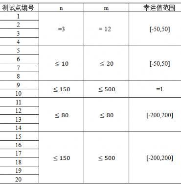

第一行包含两个正整数n和m，分别表示矩阵的行数和列数。
接下来n行，每行有m个整数，第i+1行的第j个数表示格子(j,n-i+1)的幸运值。
小E同学非常喜欢书法，他听说NOI2013已经开始了，想题一幅“NOI”的字送给大家。
小E有一张非常神奇的纸，纸可以用一个n 行m 列的二维方格矩阵来表示，为了描述方便，我们定义矩阵左下角方格坐标为(1,1) ，右上角方格坐标为(m,n) 。矩阵的每个方格有一个整数的幸运值。在格子上面写字可以增加大家的幸运度，幸运度的大小恰好是所有被笔写到的方格的幸运值之和。现在你要在上面写上 ‘N’，‘O’，‘I’三个字母。
下面给出3个书法字的定义：
1.‘N’由若干（≥3）个边平行于坐标轴的矩形组成，设有K个矩形组成（标号1~K），第i个矩形的左下角方格坐标设为(Li ,Bi) ，右上角坐标设为(Ri ,Ti) ，要求满足：
a)Li<=Ri,Bi<=Ti
b)对任意1<i<=K，有Li=R(i-1)+1
c)对任意3<=i<K，有B(i-1)-1<=Ti<=T(i-1),Bi<=B(i-1);"
d)B2>B1,T2=T1,B(K-1)=B(K),T(k-1)<T(K)
2.‘O’由一个大矩形A，挖去一个小矩形B得到，这两个矩形的边都平行于坐标轴。设大矩形左下角的方格坐标为(u,v)，长为W宽为H，则小矩形B满足左下角方格坐标为(u+1,v+1) ，长W-2 ，宽H-2。要求满足：
a)W>=3,H>=3
b)u>R(K)+1
3.‘I’为3个边平行于坐标轴的从下到上的实心矩形组成，从下到上依次标号为1,2,3，第i 个矩形的左下角格子坐标设为(Pi , Qi )，右上角格子坐标设为(Gi , Hi )，要求满足：
a)Pi<=Gi,Qi<=Hi
b)P1=P3>u+W,G1=G3
c)Q1=H1=Q2-1,H2+1=Q3=H3
d)P1<P2<=G2<G1
下图是一个‘N’,‘O’,‘I’的例子

另外，所有画的图形均不允许超过纸张的边界。现在小E想要知道,他能画出的最大幸运度是多少。
第一行包含两个正整数n和m，分别表示矩阵的行数和列数。
接下来n行，每行有m个整数，第i+1行的第j个数表示格子(j,n-i+1)的幸运值。
输出一个整数T，表示小E能够获得的最大幸运度
【样例输入1】
3 13
1 1 -1 -1 1 -1 1 1 1 -1 1 1 1
1 -1 1 -1 1 -1 1 -1 1 -1 -1 1 -1
1 -1 -1 1 1 -1 1 1 1 -1 1 1 1
【样例输入2】
3 13
-1 -1 -1 -1 -1 -1 -1 -1 -1 -1 -1 -1 -1
-1 -1 -1 -1 -1 -1 -1 -1 -1 -1 -1 -1 -1
-1 -1 -1 -1 -1 -1 -1 -1 -1 -1 -1 -1 -1
【样例输出1】
24
【样例输出2】
-20
